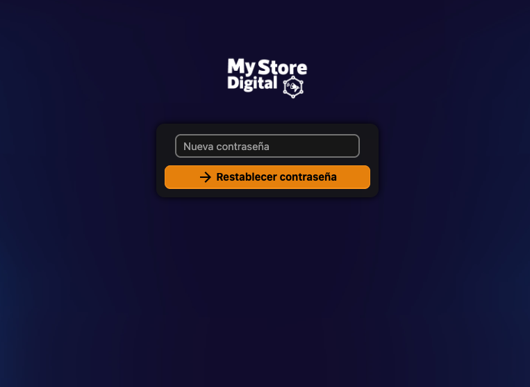
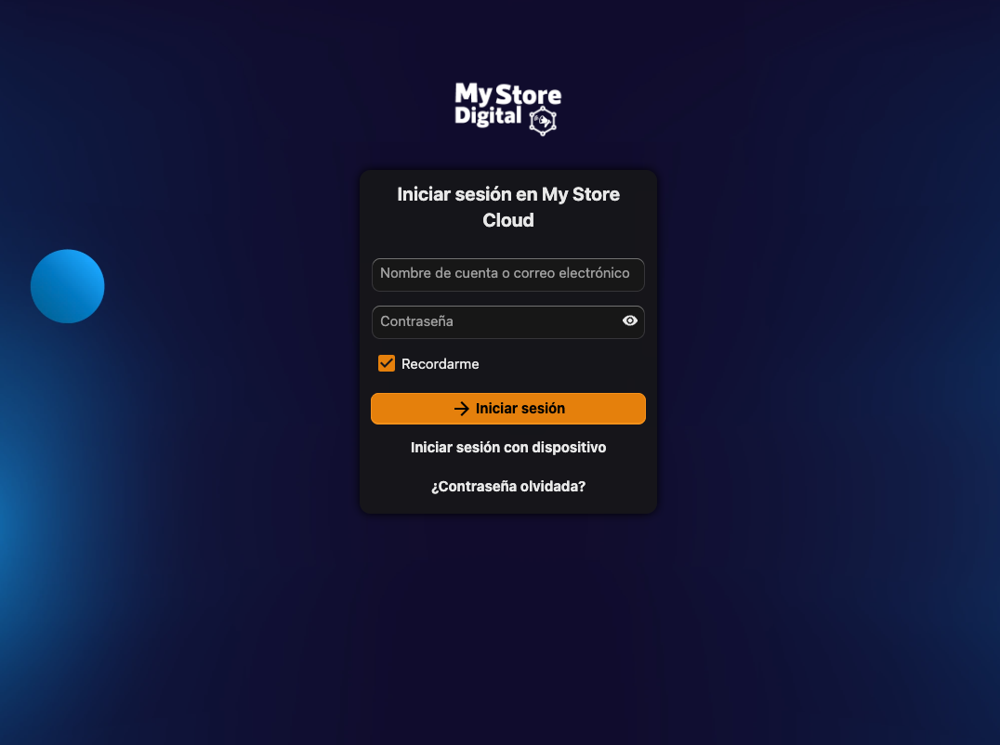
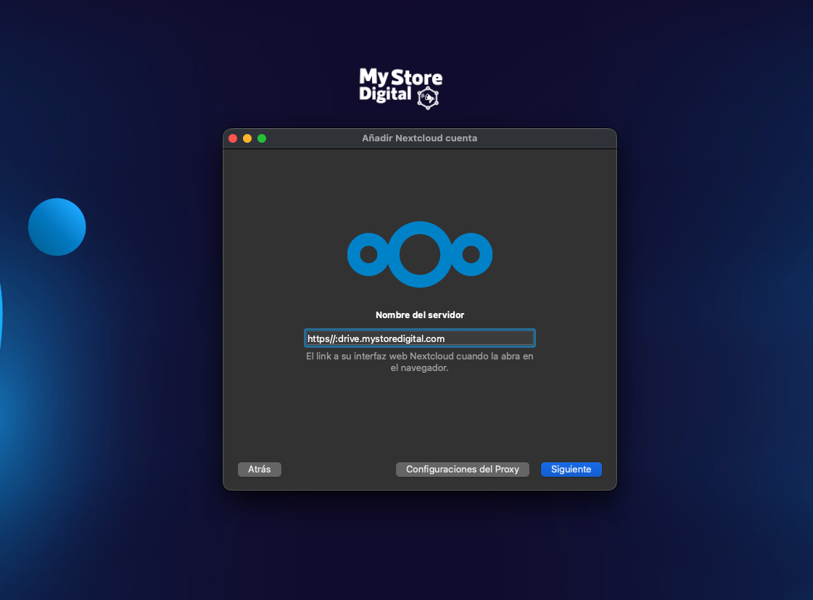

En resumen
Qué es: tu nube personal para guardar y sincronizar archivos desde el celular y la computadora.
Dónde se entra: https://drive.mystoredigital.cloud
Qué necesitás: tu nombre de usuario (te lo asignan) y crear tu contraseña con el correo que recibís.
1. Cómo ingresar por primera vez
Cuando se crea tu cuenta, te llega un correo de Nextcloud (remitente no-reply@mystoredigital.cloud) con el asunto “Tu cuenta de Nextcloud fue creada”.
- Abrí el correo de bienvenida y hacé clic en el botón para crear tu contraseña.
- Escribí una contraseña larga y única (no la repitas de otro sitio) y confirmala.
- Listo: ya quedás dentro de tu nube.

Dirección de ingreso. Guardala en favoritos:
👉 https://drive.mystoredigital.cloud
Usuario: el que te asignaron · Contraseña: la que creaste.
👉 https://drive.mystoredigital.cloud
Usuario: el que te asignaron · Contraseña: la que creaste.

¿No te llegó el correo o se venció el enlace? Entrá a
drive.mystoredigital.cloud y tocá
“¿Has olvidado tu contraseña?”. Te llegará un correo para definirla de nuevo.
(Revisá también la carpeta de spam.)
2. Activá la verificación en dos pasos (2FA)
Le suma una capa extra de seguridad: aunque alguien supiera tu contraseña, no podría entrar sin el código de tu teléfono. Muy recomendado.
- Necesitás una app de autenticación en tu celular: Google Authenticator, Authy o Microsoft Authenticator (gratis en App Store / Play Store).
- En la web, arriba a la derecha, hacé clic en tu inicial / avatar → Configuración.
- En el menú izquierdo entrá a Seguridad.
- Buscá “Autenticación de dos factores (TOTP)” y activala.
- Escaneá el código QR que aparece con tu app de autenticación.
- Escribí el código de 6 dígitos que muestra la app para confirmar. ¡Listo!
Guardá los códigos de respaldo. Al activar 2FA, Nextcloud te ofrece unos códigos de recuperación. Anotalos en un lugar seguro: te sirven para entrar si perdés el teléfono.
3. Instalá la app para sincronizar (opcional, recomendado)
Con la app, tus archivos se sincronizan solos entre tus dispositivos y la nube.
En el celular
- Descargá la app “Nextcloud” desde App Store (iPhone) o Play Store (Android).
- En “Dirección del servidor” escribí:
https://drive.mystoredigital.cloud - Iniciá sesión con tu usuario y contraseña (se abre el navegador una vez para autorizar el dispositivo).
En la computadora
- Descargá el cliente de escritorio en nextcloud.com/install (Windows, Mac o Linux).
- Servidor:
https://drive.mystoredigital.cloud→ tu usuario y contraseña. - Elegí qué carpeta querés sincronizar. Los archivos se mantienen al día automáticamente.

4. Consejos de seguridad
- Usá una contraseña larga y única; no la reutilices de otros servicios.
- No compartas tu usuario ni tu contraseña con nadie.
- Para compartir un archivo o carpeta, usá la opción “Compartir” dentro de Nextcloud — nunca des tu contraseña.
- Si entrás desde una computadora ajena, acordate de cerrar sesión al terminar.
¡Eso es todo! Con tu contraseña creada, el 2FA activo y la app instalada, ya tenés tu nube privada lista para usar desde cualquier dispositivo.
5. ¿Necesitás ayuda?
Si tenés problemas para ingresar o alguna duda, escribinos y te ayudamos a resolverlo.